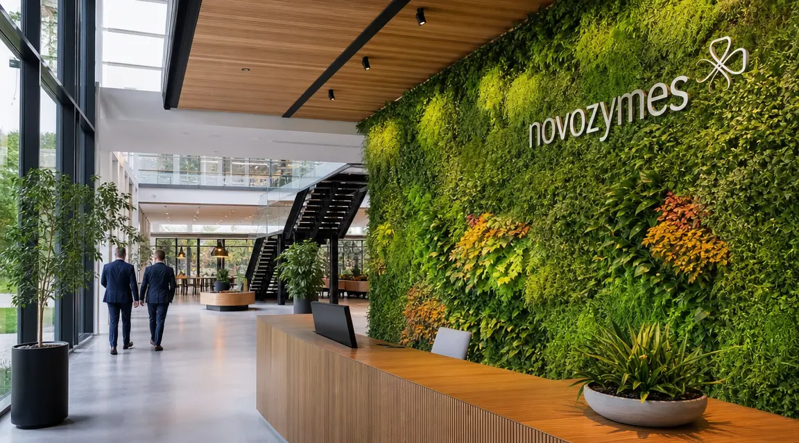
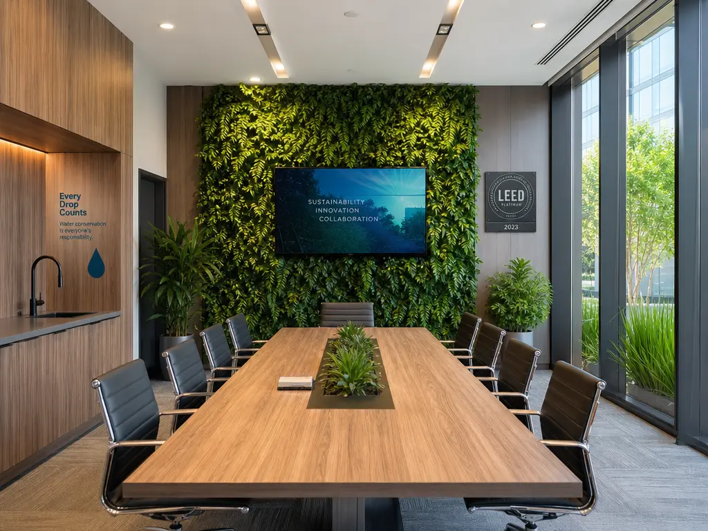
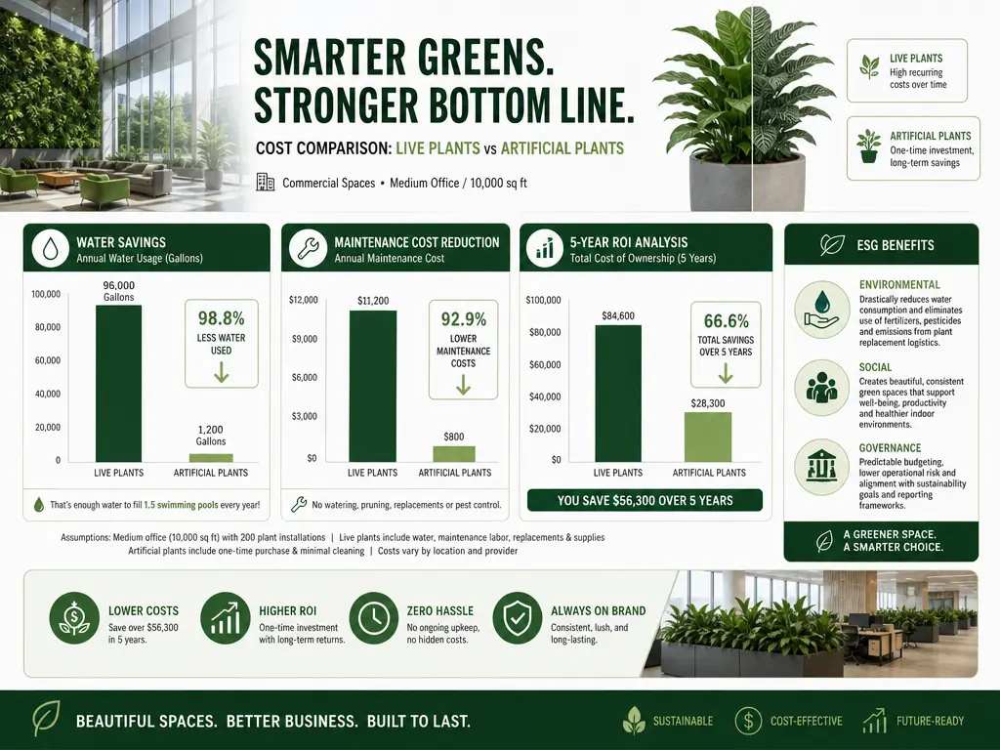
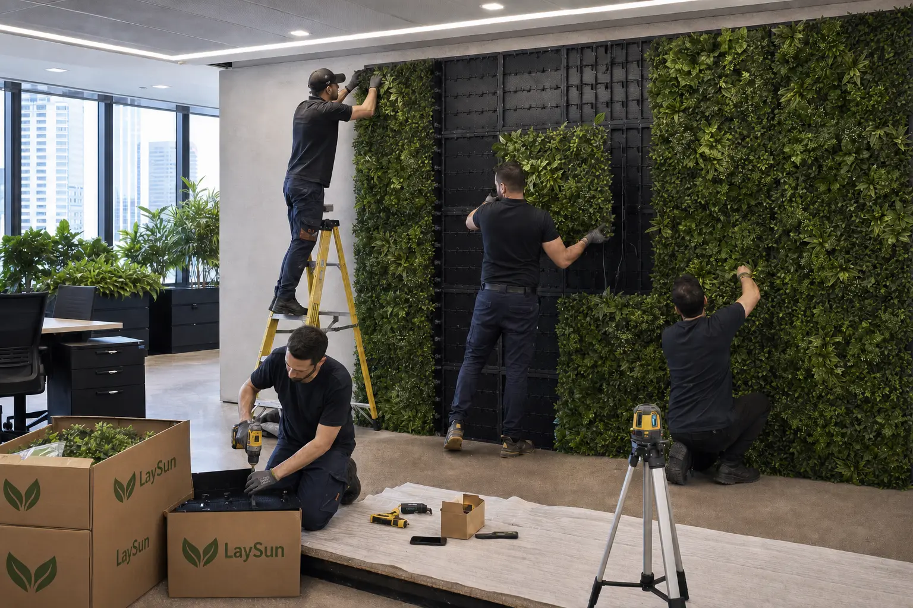

Sustainable Commercial Plantscaping: The Artificial Advantage

Here's what changed our approach to commercial sustainability.
For years, the prevailing assumption was that sustainable design meant choosing “natural” over “artificial.” Then we worked with a Fortune 500 company that was struggling to meet its ESG goals while maintaining beautiful office spaces.
Their facility manager showed us the numbers: $450,000 in annual maintenance costs for live plants, millions of gallons of water consumed, and constant plant replacements. That's when it became clear we'd been thinking about sustainability all wrong.
What if the most sustainable choice wasn't the most “natural” one?
That insight transformed how we approach commercial plantscaping at LaySun. Here's the thinking behind our perspective — and why artificial plants might be your secret weapon for achieving ESG goals.
The ESG Imperative: Rethinking What “Sustainable” Really Means
When we started working with commercial clients on sustainability goals, a pattern emerged: everyone was focused on the obvious choices — solar panels, energy-efficient lighting, recycled materials. But they were missing a massive opportunity hidden in plain sight: their plantscaping.
Here's the insight that changed everything: sustainability isn't about choosing “natural” — it's about choosing what's actually sustainable. And when you look at the numbers, artificial plants often win on multiple sustainability metrics.
Water Conservation: The Silent Sustainability Win
Water conservation is usually framed around low-flow toilets and efficient faucets. Then you see the irrigation bills for a corporate campus.
One client was spending $25,000 annually just to water their office plants. When they switched to artificial plants, they:
- Eliminated 1.2 million gallons of annual water usage
- Saved $25,000 on water bills
- Removed irrigation maintenance entirely
That reframes how to think about water conservation. Sometimes the biggest wins come from eliminating the problem entirely — not just making it more efficient.
LEED Certification: An Unexpected Advantage
LEED certification isn't about perfection — it's about smart choices. The framework rewards the elimination of environmental burdens, not just their mitigation. That's where artificial plants quietly contribute credits across several categories:
Water Efficiency Credits
- WE Credit 1 — Water Use Reduction: eliminates irrigation water entirely
- WE Credit 2 — Innovative Wastewater Technologies: no wastewater from plant maintenance
Materials & Resources Credits
- MR Credit 4 — Recycled Content: many artificial plants contain recycled materials
- MR Credit 5 — Regional Materials: local manufacturing reduces transportation emissions
Indoor Environmental Quality
- EQ Credit 8.1 — Daylight & Views: maintains a visual connection to nature without the maintenance burden

The ROI That Changed Our Perspective
The instinct is to assume artificial plants are more expensive upfront. The lesson is to calculate total cost of ownership instead. Don't just look at purchase price — look at what you're eliminating.
| Category | Live Plants | Artificial Plants | Insight |
|---|---|---|---|
| Initial Investment | $5–15/sq ft | $8–20/sq ft | Higher upfront, but… |
| Annual Maintenance | $2–5/sq ft | $0.10–0.50/sq ft | 97% savings |
| Water Costs | $1–3/sq ft | $0 | 100% elimination |
| Replacement Frequency | 2–3 years | 7–10 years | 3x longer lifespan |
| 5-Year Total Cost | $25–65/sq ft | $8.50–25/sq ft | Up to 75% savings |
Model the numbers for your own facility with our Maintenance Savings Calculator.

The Case Study That Proved Everything
The Fortune 500 company mentioned at the start was struggling with its sustainability goals. Their beautiful office plants were costing them:
- $450,000 annually in maintenance
- Millions of gallons of water
- Constant plant replacements
- Failed LEED certification attempts
After implementing artificial plantscaping:
- 87% reduction in maintenance costs ($450,000 → $58,500)
- 100% elimination of plant-related water usage
- Zero plant replacements needed in 3 years
- LEED Platinum certification achieved
- Employee satisfaction increased by 23%
The lesson: sometimes the most sustainable choice is also the most practical one.
Beyond Sustainability: Additional Business Benefits
1. Maintenance-Free Operations
No more weekly watering schedules, seasonal plant replacements, pest control treatments, soil maintenance, or fertilizer applications.
2. Consistent Aesthetics Year-Round
No seasonal die-off, a perfect appearance 365 days a year, and uniform design across multiple locations.
3. Health & Safety
No allergens from pollen, no soil-borne pathogens, no chemical fertilizers, and no irrigation system leaks.
Implementing Sustainable Artificial Plantscaping
Step 1: Assessment & Planning
- Conduct a water usage audit
- Calculate current maintenance costs
- Identify LEED certification goals
- Map existing plant locations
Step 2: Material Selection
- Choose PE (polyethylene) materials for durability
- Select UV-resistant options for longevity
- Verify recycled content percentages
- Ensure fire-retardant certifications
Step 3: Professional Installation
- Work with certified installers
- Ensure proper anchoring and safety
- Coordinate with facility management
- Plan for minimal disruption
Step 4: Ongoing Monitoring
- Regular visual inspections
- Dust cleaning protocols
- Performance tracking against sustainability goals

The Future of Sustainable Commercial Design
As we look toward 2030 sustainability targets, artificial plantscaping represents a smart intersection of environmental responsibility and business efficiency. With advances in:
- Biodegradable materials — new plant-based polymers
- Solar-powered lighting — integrated illumination systems
- Smart monitoring — IoT sensors for maintenance tracking
… the artificial advantage is only growing stronger.
The Insight That Changed Everything
Working with commercial clients on sustainability taught us this: don't let “natural” bias blind you to what's actually sustainable. Sometimes the most environmentally responsible choice isn't the most obvious one. Artificial plantscaping eliminates water waste, reduces maintenance burdens, and helps achieve LEED certification — all while maintaining beautiful, biophilic spaces.
Ready to rethink your approach to sustainable plantscaping? Contact LaySun for a free sustainability assessment and we'll explore how artificial plants can help you achieve your ESG goals while dramatically reducing operational costs. Request a quote and receive full pricing within 24 hours.
Hit your ESG goals without the maintenance burden
LaySun supplies fire-rated, UV-stable artificial trees and green walls for corporate offices, hotels, and retail environments worldwide. Factory-direct pricing, full compliance documentation included.
Commercial Solutions Explore Systems Request a Quote →